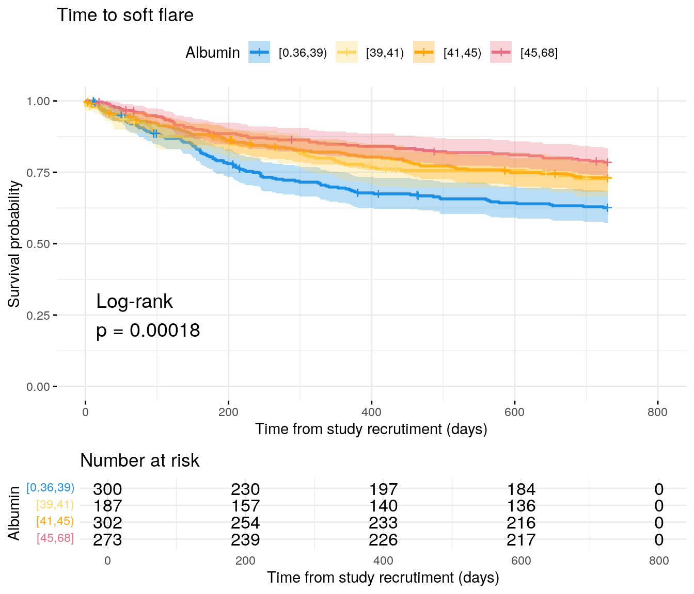
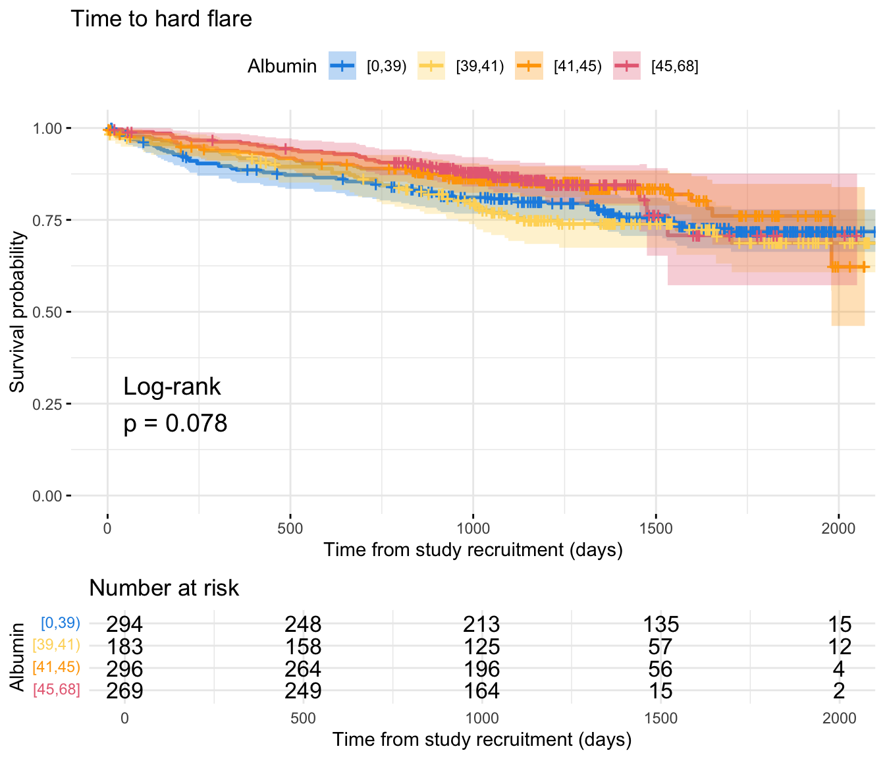
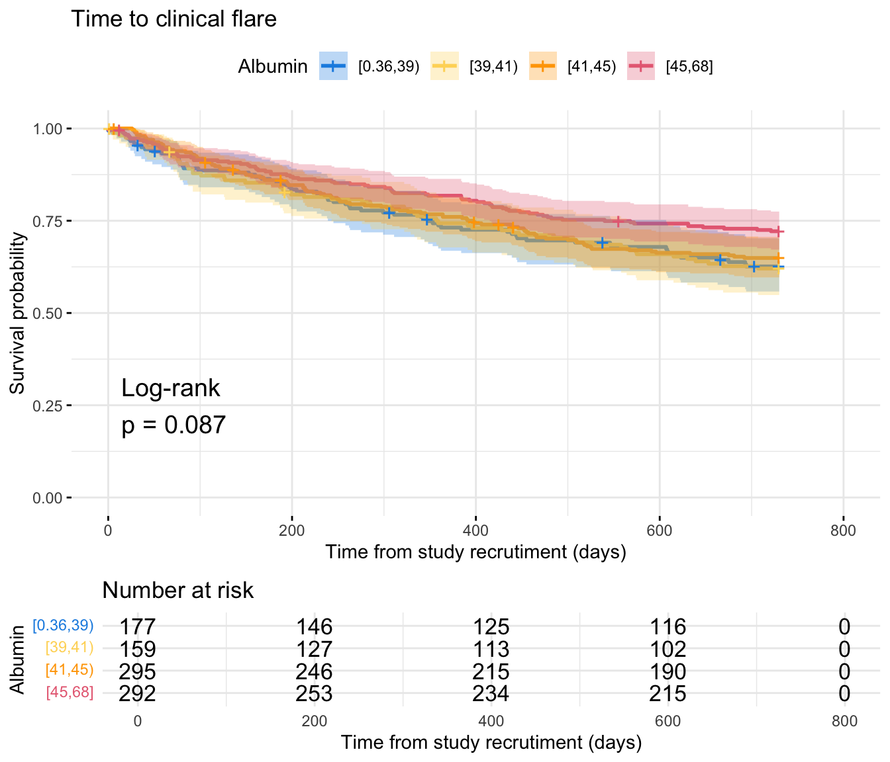
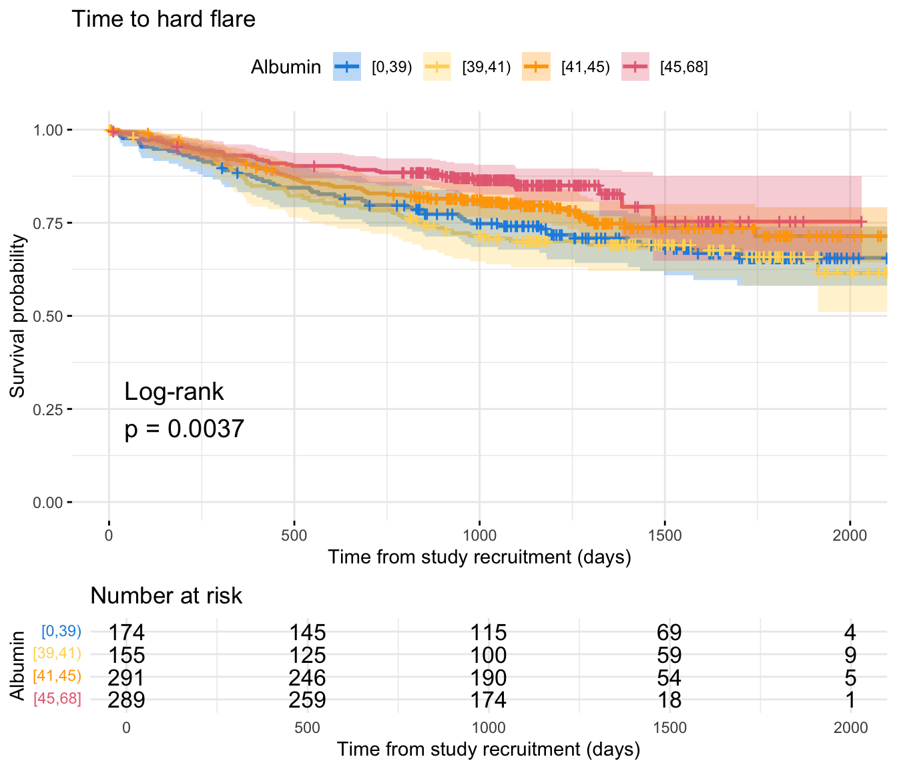

library(readxl)library(tidyverse)library(datefixR)library(survival)library(survminer)library(pander)library(coxme)library(finalfit)library(DescTools)library(gtsummary)# paths to PREdiCCt dataif(file.exists("/docker")){# If running in dockerdata.path<-"data/final/20221004/"redcap.path<-"data/final/20231030/"prefix<-"data/end-of-follow-up/"outdir<-"data/processed/"}else{# Run on OS directlydata.path<-"/Volumes/igmm/cvallejo-predicct/predicct/final/20221004/"redcap.path<-"/Volumes/igmm/cvallejo-predicct/predicct/final/20231030/"prefix<-"/Volumes/igmm/cvallejo-predicct/predicct/end-of-follow-up/"outdir<-"/Volumes/igmm/cvallejo-predicct/predicct/processed/"}demo<-readRDS(paste0(outdir, "demo-full.RDS"))demo$FC<-log(demo$FC)cox.summary<-function(fit){cat("Cox model summary:")fit%>%finalfit::fit2df(condense =FALSE)%>%knitr::kable( col.names =c("Variable","HR","Lower 95%","Upper 95%","P-value"), digits =4)%>%print()cat("\\newlineDiagnostics: \\newline")cat('\\newline::: {.panel-tabset} ')cat("###### Proportional hazards assumption test \\newline ")cox.zph(fit)$table%>%knitr::kable( col.names =c("","Chi-squared statistic","DF","P-value"), digits =4)%>%print()cat("\\newline###### DF betas \\newline ")print(ggcoxdiagnostics(fit, type ="dfbeta"))cat("\\newline ###### Martingale residuals \\newline ")print(ggcoxdiagnostics(fit, type ="martingale", linear.predictions =TRUE))cat("\\newline::: ")return()}GetHR<-function(fit, var){# Get point estimate with 95% CIHR.dat<-summary(fit)$conf.int%>%as.data.frame()%>%filter(rownames(summary(fit)$conf.int)%in%var)%>%select(`exp(coef)`, `lower .95`, `upper .95`)# Ensure variables are in the same order as varHR.dat<-HR.dat[var, ]# Add p-valueHR.dat$p<-summary(fit)$coefficients[var, "p"]names(HR.dat)<-c("HR", "Lower95", "Upper95", "p")HR.dat}flare.df<-readRDS(paste0(outdir, "flares-IBD.RDS"))flare.cd.df<-readRDS(paste0(outdir, "flares-IBD-cd.RDS"))flare.uc.df<-readRDS(paste0(outdir, "flares-IBD-uc.RDS"))cd.clin.forest<-readRDS(paste0(outdir, "cd-clin-IBD.RDS"))cd.hard.forest<-readRDS(paste0(outdir, "cd-hard-IBD.RDS"))uc.clin.forest<-readRDS(paste0(outdir, "uc-clin-IBD.RDS"))uc.hard.forest<-readRDS(paste0(outdir, "uc-hard-IBD.RDS"))
flare.cd.df$CReactiveProtein_cat<-cut(flare.cd.df$CReactiveProtein, c(0, 5, 10.0000001, Inf), labels =c("CRP < 5","5 ≤ CRP ≤ 10","CRP > 10"), include.lowest =TRUE, right =FALSE)fit<-survfit(Surv(softflare_time, softflare)~CReactiveProtein_cat, data =flare.cd.df)p<-ggsurvplot(fit, data =flare.cd.df, conf.int =TRUE, pval =TRUE, pval.method =TRUE, ggtheme =theme_minimal(), risk.table =TRUE, legend.title ="CRP", legend.labs =levels(flare.cd.df$CReactiveProtein_cat), palette =c("#1A8FE3", "#FED766", "#E76D83"), xlab ="Time from study recrutiment (days)", title ="Time to clinical flare", break.time.by =200)cairo_pdf("plots/cd/soft-flare/biochem/crp.pdf")pinvisible(dev.off())png("plots/cd/soft-flare/biochem/crp.png", width =7, height =7, units ="in", res =300)pinvisible(dev.off())p
Code
fit.me<-coxph(Surv(softflare_time, softflare)~Sex+IMD+cat+CReactiveProtein+frailty(SiteNo), control =coxph.control(outer.max =20), data =flare.cd.df)cd.clin.forest<-rbind(cd.clin.forest,GetHR(fit.me, "CReactiveProtein"))invisible(cox.summary(fit.me))
Warning: `gather_()` was deprecated in tidyr 1.2.0.
ℹ Please use `gather()` instead.
ℹ The deprecated feature was likely used in the survminer package.
Please report the issue at <https://github.com/kassambara/survminer/issues>.
`geom_smooth()` using formula = 'y ~ x'
`geom_smooth()` using formula = 'y ~ x'
Code
fit<-survfit(Surv(hardflare_time, hardflare)~CReactiveProtein_cat, data =flare.cd.df)p<-ggsurvplot(fit, data =flare.cd.df, conf.int =TRUE, pval =TRUE, pval.method =TRUE, ggtheme =theme_minimal(), risk.table =TRUE, legend.title ="CRP", legend.labs =levels(flare.cd.df$CReactiveProtein_cat), palette =c("#1A8FE3", "#FED766", "#E76D83"), xlab ="Time from study recrutiment (days)", title ="Time to hard flare", break.time.by =500)cairo_pdf("plots/cd/hard-flare/biochem/crp.pdf")pinvisible(dev.off())png("plots/cd/hard-flare/biochem/crp.png", width =7, height =7, units ="in", res =300)pinvisible(dev.off())p
Code
fit.me<-coxph(Surv(hardflare_time, hardflare)~Sex+IMD+cat+CReactiveProtein+frailty(SiteNo), control =coxph.control(outer.max =20), data =flare.cd.df)cd.hard.forest<-rbind(cd.hard.forest,GetHR(fit.me, "CReactiveProtein"))invisible(cox.summary(fit.me))
flare.uc.df$CReactiveProtein_cat<-cut(flare.uc.df$CReactiveProtein, c(0, 5, 10.0000001, Inf), labels =c("CRP < 5","5 ≤ CRP ≤ 10","CRP > 10"), include.lowest =TRUE, right =FALSE)fit<-survfit(Surv(softflare_time, softflare)~CReactiveProtein_cat, data =flare.uc.df)p<-ggsurvplot(fit, data =flare.uc.df, conf.int =TRUE, pval =TRUE, pval.method =TRUE, ggtheme =theme_minimal(), risk.table =TRUE, legend.title ="CRP", legend.labs =levels(flare.uc.df$CReactiveProtein_cat), palette =c("#1A8FE3", "#FED766", "#E76D83"), xlab ="Time from study recrutiment (days)", title ="Time to clinical flare", break.time.by =200)cairo_pdf("plots/uc/soft-flare/biochem/crp.pdf")pinvisible(dev.off())png("plots/uc/soft-flare/biochem/crp.png", width =7, height =7, units ="in", res =300)pinvisible(dev.off())p
Code
fit.me<-coxph(Surv(softflare_time, softflare)~Sex+IMD+cat+CReactiveProtein+frailty(SiteNo), control =coxph.control(outer.max =20), data =flare.uc.df)uc.clin.forest<-rbind(uc.clin.forest,GetHR(fit.me, "CReactiveProtein"))invisible(cox.summary(fit.me))
fit<-survfit(Surv(hardflare_time, hardflare)~CReactiveProtein_cat, data =flare.uc.df)p<-ggsurvplot(fit, data =flare.uc.df, conf.int =TRUE, pval =TRUE, pval.method =TRUE, ggtheme =theme_minimal(), risk.table =TRUE, legend.title ="CRP", legend.labs =levels(flare.uc.df$CReactiveProtein_cat), palette =c("#1A8FE3", "#FED766", "#E76D83"), xlab ="Time from study recrutiment (days)", title ="Time to hard flare", break.time.by =500)cairo_pdf("plots/uc/hard-flare/biochem/crp.pdf")pinvisible(dev.off())png("plots/uc/hard-flare/biochem/crp.png", width =7, height =7, units ="in", res =300)pinvisible(dev.off())p
Code
fit.me<-coxph(Surv(hardflare_time, hardflare)~Sex+IMD+cat+CReactiveProtein+frailty(SiteNo), control =coxph.control(outer.max =20), data =flare.uc.df)uc.hard.forest<-rbind(uc.hard.forest,GetHR(fit.me, "CReactiveProtein"))invisible(cox.summary(fit.me))
flare.cd.df$Haemoglobin_cat<-cut(flare.cd.df$Haemoglobin,quantile(flare.df$Haemoglobin, na.rm =TRUE), include.lowest =TRUE, right =FALSE)fit<-survfit(Surv(softflare_time, softflare)~Haemoglobin_cat, data =flare.cd.df)p<-ggsurvplot(fit, data =flare.cd.df, conf.int =TRUE, pval =TRUE, pval.method =TRUE, ggtheme =theme_minimal(), risk.table =TRUE, legend.title ="Haemoglobin", legend.labs =levels(flare.cd.df$Haemoglobin_cat), palette =c("#1A8FE3", "#FED766", "orange", "#E76D83"), xlab ="Time from study recrutiment (days)", title ="Time to clinical flare", break.time.by =200)cairo_pdf("plots/cd/soft-flare/biochem/haemoglobin.pdf")pinvisible(dev.off())png("plots/cd/soft-flare/biochem/haemoglobin.png", width =7, height =7, units ="in", res =300)pinvisible(dev.off())p
Code
fit.me<-coxph(Surv(softflare_time, softflare)~Sex+IMD+cat+Haemoglobin+frailty(SiteNo), control =coxph.control(outer.max =20), data =flare.cd.df)cd.clin.forest<-rbind(cd.clin.forest,GetHR(fit.me, "Haemoglobin"))invisible(cox.summary(fit.me))
fit<-survfit(Surv(hardflare_time, hardflare)~Haemoglobin_cat, data =flare.cd.df)p<-ggsurvplot(fit, data =flare.cd.df, conf.int =TRUE, pval =TRUE, pval.method =TRUE, ggtheme =theme_minimal(), risk.table =TRUE, legend.title ="Haemoglobin", legend.labs =levels(flare.cd.df$Haemoglobin_cat), palette =c("#1A8FE3", "#FED766", "orange", "#E76D83"), xlab ="Time from study recrutiment (days)", title ="Time to hard flare", break.time.by =500)cairo_pdf("plots/cd/hard-flare/biochem/haemoglobin.pdf")pinvisible(dev.off())png("plots/cd/hard-flare/biochem/haemoglobin.png", width =7, height =7, units ="in", res =300)pinvisible(dev.off())p
Code
fit.me<-coxph(Surv(hardflare_time, hardflare)~Sex+IMD+cat+Haemoglobin+frailty(SiteNo), control =coxph.control(outer.max =20), data =flare.cd.df)cd.hard.forest<-rbind(cd.hard.forest,GetHR(fit.me, "Haemoglobin"))invisible(cox.summary(fit.me))
flare.uc.df$Haemoglobin_cat<-cut(flare.uc.df$Haemoglobin,quantile(flare.df$Haemoglobin, na.rm =TRUE), include.lowest =TRUE, right =FALSE)fit<-survfit(Surv(softflare_time, softflare)~Haemoglobin_cat, data =flare.uc.df)p<-ggsurvplot(fit, data =flare.uc.df, conf.int =TRUE, pval =TRUE, pval.method =TRUE, ggtheme =theme_minimal(), risk.table =TRUE, legend.title ="Haemoglobin", legend.labs =levels(flare.uc.df$Haemoglobin_cat), palette =c("#1A8FE3", "#FED766", "orange", "#E76D83"), xlab ="Time from study recrutiment (days)", title ="Time to clinical flare", break.time.by =200)cairo_pdf("plots/uc/soft-flare/biochem/haemoglobin.pdf")pinvisible(dev.off())png("plots/uc/soft-flare/biochem/haemoglobin.png", width =7, height =7, units ="in", res =300)pinvisible(dev.off())p
Code
fit.me<-coxph(Surv(softflare_time, softflare)~Sex+IMD+cat+Haemoglobin+frailty(SiteNo), control =coxph.control(outer.max =20), data =flare.uc.df)uc.clin.forest<-rbind(uc.clin.forest,GetHR(fit.me, "Haemoglobin"))invisible(cox.summary(fit.me))
fit<-survfit(Surv(hardflare_time, hardflare)~Haemoglobin_cat, data =flare.uc.df)p<-ggsurvplot(fit, data =flare.uc.df, conf.int =TRUE, pval =TRUE, pval.method =TRUE, ggtheme =theme_minimal(), risk.table =TRUE, legend.title ="Haemoglobin", legend.labs =levels(flare.uc.df$Haemoglobin_cat), palette =c("#1A8FE3", "#FED766", "orange", "#E76D83"), xlab ="Time from study recrutiment (days)", title ="Time to hard flare", break.time.by =500)cairo_pdf("plots/cd/hard-flare/biochem/haemoglobin.pdf")pinvisible(dev.off())png("plots/cd/hard-flare/biochem/haemoglobin.png", width =7, height =7, units ="in", res =300)pinvisible(dev.off())p
Code
fit.me<-coxph(Surv(hardflare_time, hardflare)~Sex+IMD+cat+Haemoglobin+frailty(SiteNo), control =coxph.control(outer.max =20), data =flare.uc.df)uc.hard.forest<-rbind(uc.hard.forest,GetHR(fit.me, "Haemoglobin"))invisible(cox.summary(fit.me))
flare.cd.df$WCC_cat<-cut(flare.cd.df$WCC,quantile(flare.df$WCC, na.rm =TRUE), include.lowest =TRUE, right =FALSE)fit<-survfit(Surv(softflare_time, softflare)~WCC_cat, data =flare.cd.df)p<-ggsurvplot(fit, data =flare.cd.df, conf.int =TRUE, pval =TRUE, pval.method =TRUE, ggtheme =theme_minimal(), risk.table =TRUE, legend.title ="White cell count", legend.labs =levels(flare.cd.df$WCC_cat), palette =c("#1A8FE3", "#FED766", "orange", "#E76D83"), xlab ="Time from study recrutiment (days)", title ="Time to clinical flare", break.time.by =200)cairo_pdf("plots/cd/soft-flare/biochem/wcc.pdf")pinvisible(dev.off())png("plots/cd/soft-flare/biochem/wcc.png", width =7, height =7, units ="in", res =300)pinvisible(dev.off())p
Code
fit.me<-coxph(Surv(softflare_time, softflare)~Sex+IMD+cat+WCC+frailty(SiteNo), control =coxph.control(outer.max =20), data =flare.cd.df)cd.clin.forest<-rbind(cd.clin.forest,GetHR(fit.me, "WCC"))invisible(cox.summary(fit.me))
fit<-survfit(Surv(hardflare_time, hardflare)~WCC_cat, data =flare.cd.df)p<-ggsurvplot(fit, data =flare.cd.df, conf.int =TRUE, pval =TRUE, pval.method =TRUE, ggtheme =theme_minimal(), risk.table =TRUE, legend.title ="White cell count", legend.labs =levels(flare.cd.df$WCC_cat), palette =c("#1A8FE3", "#FED766", "orange", "#E76D83"), xlab ="Time from study recrutiment (days)", title ="Time to hard flare", break.time.by =500)cairo_pdf("plots/cd/hard-flare/biochem/wcc.pdf")pinvisible(dev.off())png("plots/cd/hard-flare/biochem/wcc.png", width =7, height =7, units ="in", res =300)pinvisible(dev.off())p
Code
fit.me<-coxph(Surv(hardflare_time, hardflare)~Sex+IMD+cat+WCC+frailty(SiteNo), control =coxph.control(outer.max =20), data =flare.cd.df)cd.hard.forest<-rbind(cd.hard.forest,GetHR(fit.me, "WCC"))invisible(cox.summary(fit.me))
flare.uc.df$WCC_cat<-cut(flare.uc.df$WCC,quantile(flare.df$WCC, na.rm =TRUE), include.lowest =TRUE, right =FALSE)fit<-survfit(Surv(softflare_time, softflare)~WCC_cat, data =flare.uc.df)p<-ggsurvplot(fit, data =flare.uc.df, conf.int =TRUE, pval =TRUE, pval.method =TRUE, ggtheme =theme_minimal(), risk.table =TRUE, legend.title ="White cell count", legend.labs =levels(flare.uc.df$WCC_cat), palette =c("#1A8FE3", "#FED766", "orange", "#E76D83"), xlab ="Time from study recrutiment (days)", title ="Time to clinical flare", break.time.by =200)cairo_pdf("plots/uc/soft-flare/biochem/wcc.pdf")pinvisible(dev.off())png("plots/uc/soft-flare/biochem/wcc.png", width =7, height =7, units ="in", res =300)pinvisible(dev.off())p
Code
fit.me<-coxph(Surv(softflare_time, softflare)~Sex+IMD+cat+WCC+frailty(SiteNo), control =coxph.control(outer.max =20), data =flare.uc.df)uc.clin.forest<-rbind(uc.clin.forest,GetHR(fit.me, "WCC"))invisible(cox.summary(fit.me))
fit<-survfit(Surv(hardflare_time, hardflare)~WCC_cat, data =flare.uc.df)p<-ggsurvplot(fit, data =flare.uc.df, conf.int =TRUE, pval =TRUE, pval.method =TRUE, ggtheme =theme_minimal(), risk.table =TRUE, legend.title ="White cell count", legend.labs =levels(flare.uc.df$WCC_cat), palette =c("#1A8FE3", "#FED766", "orange", "#E76D83"), xlab ="Time from study recrutiment (days)", title ="Time to hard flare", break.time.by =500)cairo_pdf("plots/uc/hard-flare/biochem/wcc.pdf")pinvisible(dev.off())png("plots/uc/hard-flare/biochem/wcc.png", width =7, height =7, units ="in", res =300)pinvisible(dev.off())p
Code
fit.me<-coxph(Surv(hardflare_time, hardflare)~Sex+IMD+cat+WCC+frailty(SiteNo), control =coxph.control(outer.max =20), data =flare.uc.df)uc.hard.forest<-rbind(uc.hard.forest,GetHR(fit.me, "WCC"))invisible(cox.summary(fit.me))
There is significant separation between Kaplan-Meier curves for platelets for both soft and hard flares in CD. However, this significance is lost when controlling for FC and other variables via Cox regression. No significant findings are reported for UC.
flare.cd.df$Platelets_cat<-cut(flare.cd.df$Platelets,quantile(flare.df$Platelets, na.rm =TRUE), include.lowest =TRUE, right =FALSE)fit<-survfit(Surv(softflare_time, softflare)~Platelets_cat, data =flare.cd.df)p<-ggsurvplot(fit, data =flare.cd.df, conf.int =TRUE, pval =TRUE, pval.method =TRUE, ggtheme =theme_minimal(), risk.table =TRUE, legend.title ="Platelets", legend.labs =levels(flare.cd.df$Platelets_cat), palette =c("#1A8FE3", "#FED766", "orange", "#E76D83"), xlab ="Time from study recrutiment (days)", title ="Time to soft flare", break.time.by =200)cairo_pdf("plots/cd/soft-flare/biochem/Platelets.pdf")pinvisible(dev.off())png("plots/cd/soft-flare/biochem/Platelets.png", width =7, height =7, units ="in", res =300)pinvisible(dev.off())p
Code
fit.me<-coxph(Surv(softflare_time, softflare)~Sex+IMD+cat+Platelets+frailty(SiteNo), control =coxph.control(outer.max =20), data =flare.cd.df)cd.clin.forest<-rbind(cd.clin.forest,GetHR(fit.me, "Platelets"))invisible(cox.summary(fit.me))
fit<-survfit(Surv(hardflare_time, hardflare)~Platelets_cat, data =flare.cd.df)p<-ggsurvplot(fit, data =flare.cd.df, conf.int =TRUE, pval =TRUE, pval.method =TRUE, ggtheme =theme_minimal(), risk.table =TRUE, legend.title ="Platelets", legend.labs =levels(flare.cd.df$Platelets_cat), palette =c("#1A8FE3", "#FED766", "orange", "#E76D83"), xlab ="Time from study recrutiment (days)", title ="Time to hard flare", break.time.by =500)cairo_pdf("plots/cd/hard-flare/biochem/Platelets.pdf")pinvisible(dev.off())png("plots/cd/hard-flare/biochem/Platelets.png", width =7, height =7, units ="in", res =300)pinvisible(dev.off())p
Code
fit.me<-coxph(Surv(hardflare_time, hardflare)~Sex+IMD+cat+Platelets+frailty(SiteNo), control =coxph.control(outer.max =20), data =flare.cd.df)cd.hard.forest<-rbind(cd.hard.forest,GetHR(fit.me, "Platelets"))invisible(cox.summary(fit.me))
flare.uc.df$Platelets_cat<-cut(flare.uc.df$Platelets,quantile(flare.df$Platelets, na.rm =TRUE), include.lowest =TRUE, right =FALSE)fit<-survfit(Surv(softflare_time, softflare)~Platelets_cat, data =flare.uc.df)p<-ggsurvplot(fit, data =flare.uc.df, conf.int =TRUE, pval =TRUE, pval.method =TRUE, ggtheme =theme_minimal(), risk.table =TRUE, legend.title ="Platelets", legend.labs =levels(flare.uc.df$Platelets_cat), palette =c("#1A8FE3", "#FED766", "orange", "#E76D83"), xlab ="Time from study recrutiment (days)", title ="Time to soft flare", break.time.by =200)cairo_pdf("plots/uc/soft-flare/biochem/Platelets.pdf")pinvisible(dev.off())png("plots/uc/soft-flare/biochem/Platelets.png", width =7, height =7, units ="in", res =300)pinvisible(dev.off())p
Code
fit.me<-coxph(Surv(softflare_time, softflare)~Sex+IMD+cat+Platelets+frailty(SiteNo), control =coxph.control(outer.max =20), data =flare.uc.df)uc.clin.forest<-rbind(uc.clin.forest,GetHR(fit.me, "Platelets"))invisible(cox.summary(fit.me))
fit<-survfit(Surv(hardflare_time, hardflare)~Platelets_cat, data =flare.uc.df)p<-ggsurvplot(fit, data =flare.uc.df, conf.int =TRUE, pval =TRUE, pval.method =TRUE, ggtheme =theme_minimal(), risk.table =TRUE, legend.title ="Platelets", legend.labs =levels(flare.uc.df$Platelets_cat), palette =c("#1A8FE3", "#FED766", "orange", "#E76D83"), xlab ="Time from study recrutiment (days)", title ="Time to hard flare", break.time.by =500)cairo_pdf("plots/uc/hard-flare/biochem/Platelets.pdf")pinvisible(dev.off())png("plots/uc/hard-flare/biochem/Platelets.png", width =7, height =7, units ="in", res =300)pinvisible(dev.off())p
Code
fit.me<-coxph(Surv(hardflare_time, hardflare)~Sex+IMD+cat+Platelets+frailty(SiteNo), control =coxph.control(outer.max =20), data =flare.uc.df)uc.hard.forest<-rbind(uc.hard.forest,GetHR(fit.me, "Platelets"))invisible(cox.summary(fit.me))
flare.cd.df$Albumin_cat<-cut(flare.cd.df$Albumin,quantile(flare.df$Albumin, na.rm =TRUE), include.lowest =TRUE, right =FALSE)fit<-survfit(Surv(softflare_time, softflare)~Albumin_cat, data =flare.cd.df)p<-ggsurvplot(fit, data =flare.cd.df, conf.int =TRUE, pval =TRUE, pval.method =TRUE, ggtheme =theme_minimal(), risk.table =TRUE, legend.title ="Albumin", legend.labs =levels(flare.cd.df$Albumin_cat), palette =c("#1A8FE3", "#FED766", "orange", "#E76D83"), xlab ="Time from study recrutiment (days)", title ="Time to clinical flare", break.time.by =200)cairo_pdf("plots/cd/soft-flare/biochem/albumin.pdf")pinvisible(dev.off())png("plots/cd/soft-flare/biochem/albumin.png", width =7, height =7, units ="in", res =300)pinvisible(dev.off())p

Code
fit.me<-coxph(Surv(softflare_time, softflare)~Sex+IMD+cat+Albumin+frailty(SiteNo), control =coxph.control(outer.max =20), data =flare.cd.df)cd.clin.forest<-rbind(cd.clin.forest,GetHR(fit.me, "Albumin"))invisible(cox.summary(fit.me))
fit<-survfit(Surv(hardflare_time, hardflare)~Albumin_cat, data =flare.cd.df)p<-ggsurvplot(fit, data =flare.cd.df, conf.int =TRUE, pval =TRUE, pval.method =TRUE, ggtheme =theme_minimal(), risk.table =TRUE, legend.title ="Albumin", legend.labs =levels(flare.cd.df$Albumin_cat), palette =c("#1A8FE3", "#FED766", "orange", "#E76D83"), xlab ="Time from study recrutiment (days)", title ="Time to hard flare", break.time.by =500)cairo_pdf("plots/cd/hard-flare/biochem/albumin.pdf")pinvisible(dev.off())png("plots/cd/hard-flare/biochem/albumin.png", width =7, height =7, units ="in", res =300)pinvisible(dev.off())p

Code
fit.me<-coxph(Surv(hardflare_time, hardflare)~Sex+IMD+cat+Albumin+frailty(SiteNo), control =coxph.control(outer.max =20), data =flare.cd.df)cd.hard.forest<-rbind(cd.hard.forest,GetHR(fit.me, "Albumin"))invisible(cox.summary(fit.me))
flare.uc.df$Albumin_cat<-cut(flare.uc.df$Albumin,quantile(flare.df$Albumin, na.rm =TRUE), include.lowest =TRUE, right =FALSE)fit<-survfit(Surv(softflare_time, softflare)~Albumin_cat, data =flare.uc.df)p<-ggsurvplot(fit, data =flare.uc.df, conf.int =TRUE, pval =TRUE, pval.method =TRUE, ggtheme =theme_minimal(), risk.table =TRUE, legend.title ="Albumin", legend.labs =levels(flare.uc.df$Albumin_cat), palette =c("#1A8FE3", "#FED766", "orange", "#E76D83"), xlab ="Time from study recrutiment (days)", title ="Time to clinical flare", break.time.by =200)cairo_pdf("plots/uc/soft-flare/biochem/albumin.pdf")pinvisible(dev.off())png("plots/uc/soft-flare/biochem/albumin.png", width =7, height =7, units ="in", res =300)pinvisible(dev.off())p

Code
fit.me<-coxph(Surv(softflare_time, softflare)~Sex+IMD+cat+Albumin+frailty(SiteNo), control =coxph.control(outer.max =20), data =flare.uc.df)uc.clin.forest<-rbind(uc.clin.forest,GetHR(fit.me, "Albumin"))invisible(cox.summary(fit.me))
fit<-survfit(Surv(hardflare_time, hardflare)~Albumin_cat, data =flare.uc.df)p<-ggsurvplot(fit, data =flare.uc.df, conf.int =TRUE, pval =TRUE, pval.method =TRUE, ggtheme =theme_minimal(), risk.table =TRUE, legend.title ="Albumin", legend.labs =levels(flare.uc.df$Albumin_cat), palette =c("#1A8FE3", "#FED766", "orange", "#E76D83"), xlab ="Time from study recrutiment (days)", title ="Time to hard flare", break.time.by =500)cairo_pdf("plots/uc/hard-flare/biochem/albumin.pdf")pinvisible(dev.off())png("plots/uc/hard-flare/biochem/albumin.png", width =7, height =7, units ="in", res =300)pinvisible(dev.off())p

Code
fit.me<-coxph(Surv(hardflare_time, hardflare)~Sex+IMD+cat+Albumin+frailty(SiteNo), control =coxph.control(outer.max =20), data =flare.uc.df)uc.hard.forest<-rbind(uc.hard.forest,GetHR(fit.me, "Albumin"))invisible(cox.summary(fit.me))